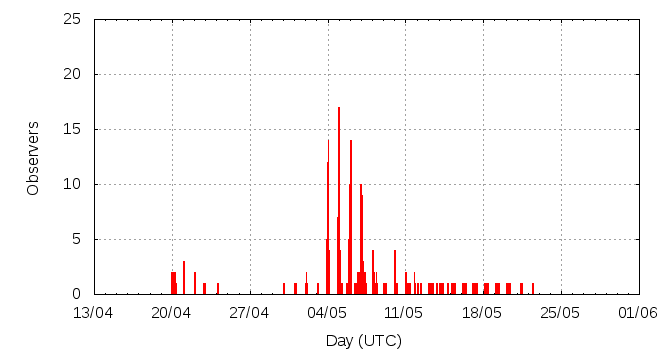

[ www.imo.net ]
This page shows automated results of the eta-Aquariids 2013, based on visual observations reported by citizen scientists through the report form of the International Meteor Organization (IMO). The information on this page is generated automatically; for scientific use please refer to manual analyses published in scientific journals (such as WGN). Send your feedback regarding this page to Geert Barentsen.
Page contents:
Note that the data will finally go into the Visual Meteor Database (VMDB) with manual inspection and rectifications. We are curretly completing the files of 2008-2011. The VMDB is an enormous project - any help will be greatly appreciated.
Page generated: 2013 June 13 at 17:00 UTC.
The graph below shows the ZHR (Zenithal Hourly Rate), which is the number of meteors an observer would see under a very dark sky with the radiant of the shower in zenith.
ZHRmax = 135 based on 898 eta-Aquariids reported in 186 intervals, assuming population index r = 2.4

| Time (UTC) | Solarlon | nINT | nETA | ZHR | Particle density | |
|---|---|---|---|---|---|---|
| 2013-04-20 07:52 | 30.215 | 2 | 0 | 6 | ±6 | 11 / 109·km3 |
| 2013-04-22 02:10 | 31.934 | 2 | 0 | 15 | ±15 | 27 / 109·km3 |
| 2013-05-01 01:58 | 40.680 | 1 | 1 | 14 | ±10 | 25 / 109·km3 |
| 2013-05-02 02:11 | 41.660 | 5 | 19 | 25 | ±6 | 46 / 109·km3 |
| 2013-05-03 23:27 | 43.489 | 10 | 40 | 35 | ±5 | 64 / 109·km3 |
| 2013-05-05 00:15 | 44.490 | 9 | 31 | 74 | ±13 | 135 / 109·km3 |
| 2013-05-05 01:36 | 44.545 | 6 | 43 | 72 | ±11 | 131 / 109·km3 |
| 2013-05-05 04:16 | 44.652 | 3 | 42 | 73 | ±11 | 133 / 109·km3 |
| 2013-05-05 21:56 | 45.366 | 6 | 31 | 101 | ±18 | 184 / 109·km3 |
| 2013-05-06 01:05 | 45.493 | 10 | 41 | 101 | ±16 | 184 / 109·km3 |
| 2013-05-06 02:45 | 45.560 | 6 | 67 | 135 | ±16 | 246 / 109·km3 |
| 2013-05-06 15:06 | 46.059 | 4 | 30 | 132 | ±24 | 240 / 109·km3 |
| 2013-05-06 18:11 | 46.183 | 3 | 32 | 121 | ±21 | 220 / 109·km3 |
| 2013-05-07 01:06 | 46.462 | 11 | 30 | 71 | ±13 | 129 / 109·km3 |
| 2013-05-07 02:20 | 46.512 | 8 | 68 | 96 | ±12 | 175 / 109·km3 |
| 2013-05-07 04:29 | 46.598 | 12 | 61 | 63 | ±8 | 115 / 109·km3 |
| 2013-05-07 08:28 | 46.759 | 4 | 30 | 88 | ±16 | 160 / 109·km3 |
| 2013-05-07 10:19 | 46.833 | 3 | 31 | 77 | ±14 | 140 / 109·km3 |
| 2013-05-08 01:50 | 47.459 | 5 | 36 | 63 | ±10 | 115 / 109·km3 |
| 2013-05-08 03:48 | 47.539 | 4 | 32 | 38 | ±7 | 69 / 109·km3 |
| 2013-05-08 16:51 | 48.065 | 5 | 31 | 30 | ±5 | 55 / 109·km3 |
| 2013-05-09 23:45 | 49.311 | 11 | 30 | 23 | ±4 | 42 / 109·km3 |
| 2013-05-10 23:50 | 50.281 | 5 | 38 | 25 | ±4 | 46 / 109·km3 |
| 2013-05-12 10:53 | 51.692 | 6 | 34 | 18 | ±3 | 33 / 109·km3 |
| 2013-05-14 08:51 | 53.540 | 13 | 21 | 8 | ±2 | 15 / 109·km3 |
| 2013-05-16 13:56 | 55.674 | 10 | 31 | 9 | ±2 | 16 / 109·km3 |
| 2013-05-18 14:32 | 57.624 | 12 | 24 | 6 | ±1 | 11 / 109·km3 |
| 2013-05-20 08:06 | 59.291 | 7 | 18 | 7 | ±2 | 13 / 109·km3 |
| 2013-05-22 02:13 | 60.979 | 3 | 6 | 6 | ±2 | 11 / 109·km3 |
The reported intervals are automatically added together into the bins shown above, based on the number of meteors and the distribution of the intervals. For each bin, the following parameters are computed:
Data has been received from 53 observers in 22 countries. Thank you for your efforts!
Note: click on the map for an interactive version.

| Observer | Country | Teff | nETA |
|---|---|---|---|
| Alexandre Amorim | Brazil | 3.12h | 11 |
| Janos Bakos | Hungary | 1.76h | 9 |
| Adair Cardoso | Brazil | 1.95h | 1 |
| Neeraja Chinchalkar | India | 2.00h | 12 |
| Seokhee Cho | South Korea | 0.73h | 6 |
| Tim Cooper | South Africa | 15.66h | 256 |
| Daniel Cosovanu | Romania | 0.65h | 6 |
| Ilie Cosovanu | Romania | 0.75h | 9 |
| Lucian-mihai Cosovanu | Romania | 1.67h | 8 |
| Enrique De Ferra Fantín | Spain | 1.42h | 22 |
| Ana ?egarac | Serbia | 1.46h | 6 |
| Shy Halatzi | Israel | 1.50h | 13 |
| Devika Hardikar | India | 2.00h | 10 |
| Gabriel Hickel | Brazil | 1.59h | 35 |
| Ilija Ivanovic | Serbia | 2.47h | 4 |
| Stanislav Korotkiy | Russia | 3.17h | 37 |
| Marina Kychyzhyyeva | Ukraine | 7.56h | 34 |
| Tomasz Lenart | Poland | 0.50h | 0 |
| Florin Leu | Romania | 1.63h | 11 |
| Anna Levin | Israel | 2.18h | 23 |
| Michal Lewenstein | Israel | 0.50h | 3 |
| Michael Linnolt | United States | 0.87h | 25 |
| Maria Makarova | Ukraine | 9.55h | 29 |
| Ivana Marjanovic | Serbia | 1.77h | 6 |
| Daria Maskova | Ukraine | 2.60h | 3 |
| Bruce Mccurdy | Canada | 1.50h | 9 |
| Frederic Merlin | France | 0.92h | 9 |
| Alexsandr Morozov | Russia | 2.05h | 12 |
| Anna Pavlova | Ukraine | 5.63h | 13 |
| Albina Petrova | Russia | 2.67h | 38 |
| Ella Ratz | Israel | 1.54h | 15 |
| Nadav Rotenberg | Israel | 1.00h | 10 |
| Mikiya Sato | Japan | 0.83h | 17 |
| Tomoko Sato | Japan | 1.00h | 20 |
| Dasa Spasojevic | Serbia | 2.29h | 4 |
| Ilan Tchenak | Israel | 1.15h | 10 |
| Tamara Tchenak | Israel | 0.67h | 7 |
| Ross Terrence | United States | 2.17h | 7 |
| Jurgen Rendtel | Germany | 47.25h | 198 |
| Branislav Savic | Serbia | 7.59h | 13 |
| Maciek Myszkiewicz | Poland | 4.08h | 2 |
| Michel Vandeputte | Belgium | 5.00h | 20 |
| Branislav Savic | Serbia | 1.50h | 7 |
| Terrence Ross | United States | 27.71h | 127 |
| Sasha Prokofyev | Russia | 7.69h | 70 |
| Pierre Bader | Germany | 2.80h | 5 |
| Koen Miskotte | Netherlands | 6.56h | 13 |
| Sasha Prokophiev | Russia | 1.00h | 10 |
| Shigeo Uchiyama | Japan | 1.17h | 13 |
| Peter Van Leuteren | Netherlands | 0.50h | 3 |
| Alla Volkova | Ukraine | 2.49h | 5 |
| Marta Volkova | Ukraine | 2.31h | 1 |
| Selim Yakybov | Ukraine | 6.98h | 13 |
| Yidong Yu | China | 2.35h | 2 |
| Weizhou Zeng | China | 0.77h | 4 |
| Tianwei Zhang | China | 0.67h | 3 |
| Roman Zvagelsky | Ukraine | 2.71h | 13 |
Create your own analysis. The files below can be opened using Excel:
eta2013_rate.csv (number of meteors per interval per observer)
eta2013_magn.csv (number of meteors per magnitude bin per observer)
The information on this page may be distributed freely provided credit is given to the International Meteor Organization (IMO) and, when possible, to the individual observers. The computer facilities to generate this page are provided by ESA/RSSD and Armagh Observatory.
References: